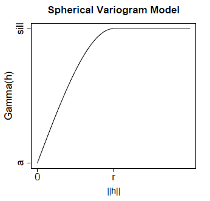
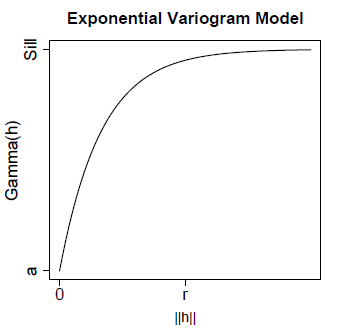
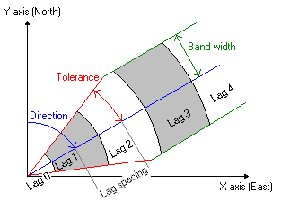

Geostatistical Methods
The
Geostatistical Methods allows the user modelling
spatial data. Providing accurate and reliable estimations of phenomena
at locations where no measurements are available.
Terraview uses a Semivariogram
for mapping or estimating the interpolation between the data points. The empirical variogram is used in geostatistics as a first estimate of the
(theoretical) variogram needed for spatial interpolation by kriging.
The semivariogram tries to prove that things nearby tend to be more
similar than things that are farther apart. Semivariogram measure the
strength of statistical correlation as a function of distance.
The process of
modeling semivariograms functions fits a semivariogram curve to
your empirical data. Using your knowledge of the phenomenon, the goal
is to achieve the best fit. There are certain characteristics that are
commonly used to describe these models.
- nugget n:
The height of the jump of the semivariogram at the discontinuity at the
origin.
- sill s:
Limit of the variogram tending to infinity lag distances.
- range r:
The distance in which the difference of the variogram from the sill
becomes negligible. In models with a fixed sill, it is the distance at
which this is first reached;
TerraView provides the
following functions to model the empirical semivariogram:
The
spherical model is particularly good for modeling spatial correlation
which decreases approximately linearly with the separation distance,
and is assumed to be zero beyond a certain distance. This is probably
the most commonly used variogram structure in practice.

The
exponential model has a similar shape to the spherical model but
reaches the sill more quickly.

The Gaussian model is used when
the data exhibit strong continuity at
short lag distances (i.e.: when the spatial correlation between two
nearby points is
very high).
Spatial Correlation
Spatial autocorrelation measures dependence among nearby values in a
spatial distribution.

- The lag size is the size
of a distance class into
which pairs of locations are grouped to reduce the large
number of possible combinations. A good lag distance can also help
reveal spatial
correlations.
- The direction angle is
measured clockwise from the Y-axis and defines the direction in which
points should be located relative to each other. When you use a
direction angle of 90°, it means that only point pairs for which
the points are located in West-East or in East-West direction will be
considered (i.e. +90° clockwise from the Y-axis).
- The tolerance angle is a parameter with
which you can limit the
number of point pairs. When a tolerance of 45° is used, all point
pairs
in the map will contribute to calculated semivariogram values.
It is
accessible through:
Plugins > Spatial Analysis >
Geostatistical Methods...
This
interface consists of the
following steps:
1.
Input Information:
- Layer Name: Select the
desired Layer.
- Attribute: The attribute
to be analyzed.
2. Parameters:
- Method: Only
semivariogram method is available.
- Adjust
- Model: Spherical,
Exponential, Gaussian.
3. Output
Information:
A graph will be presented with the distribution of points
and a curve representing
the selected template. Use the parameters to adjust the curve to the points.
Click Apply and then the graph with point
distribution will be calculated.
Note: This component serves only to fit a model to a distribution of
points.